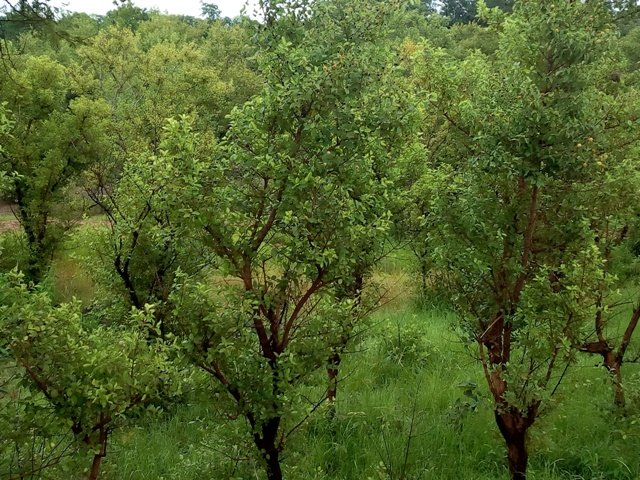
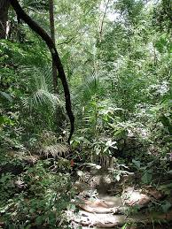
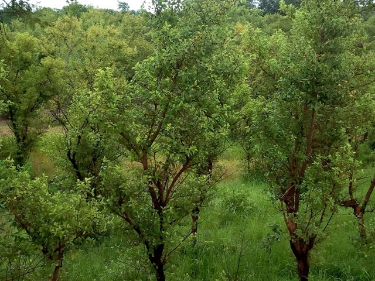
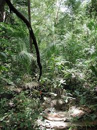

Description
La forêt classée de DIDA est une vaste réserve naturelle située à proximité de Banfora. Elle est connue pour sa biodiversité riche, abritant de nombreuses espèces d’arbres, d’oiseaux et d’animaux sauvages. Cette forêt est un lieu précieux pour la conservation de la nature et un espace de détente pour les visiteurs qui aiment le calme et la nature sauvage.
Historique
La forêt de DIDA a été classée pour protéger ses ressources naturelles contre la déforestation et les activités humaines non contrôlées. Depuis sa protection, elle joue un rôle important dans l’équilibre écologique de la région et contribue à la lutte contre le changement climatique local.
Galerie photos
 


